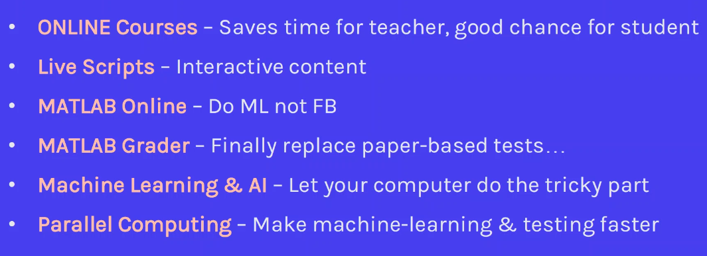

Introduction
Title: The benefits of Matlab Campus-Wide license
- with a focus on AI and ML
Contents:

Online courses
Mathworks portal: University has dedicated portal
Courses homepage: matlabacademy.mathworks.com

- OnRamp courses: 13 courses, 23 hours
- prior to the first classroom lectures
- don’t waste time teach basics of syntax, use online course
- Matlab, Simulink, AI, ML DL, RL Onramps
- Signal Processing
- InDepth: free for CWL, 13 courses, 100 hours
- OnRamp courses: 13 courses, 23 hours
Matlab Online
Live Scripts
include controls, like in Jupyter notebooks
much less files in one project
Matlab on mobile platforms (phone)
- access sensors (e.g. step counter)
Matlab Grader
- 90% of tests can be implemented online instead of paper & pen
- some effort:
- clear description, form of solution
- Latex based support
- prepare template, piece of code with empty parts
- prepare reference solution
- MG compares student solution with reference sol
- provide testing criteria
- can add .m files or .p files
- test types:
- compare variable with correct result
- matlab code for own testing
- can be implemented in Moodle!
- It is possible to compare students’ solutions among each other
- Can later modify come and evaluate them again
- Can export results in excel sheet format
ML, DL, AI support
supports entire workflow:
- data preparation, generation, cleaning
- AI modeling: design, tuning, train, compatib with TF and pytorch (yeah sure )
- System design (simulink, simscape, validation)
- Deployment & code generation
Use DL Toolbox examples, courses
Examples:
Written character recognition
Classification Learner tool
- many algorithms available
Transfer Learning with Deep Network Designer
- built-in pretrain networks
Parallel computing support (
parfor)